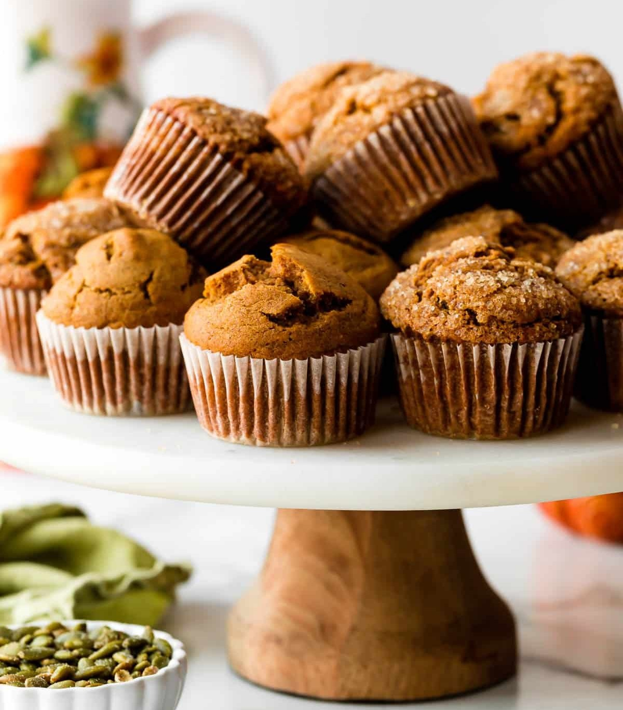

Pumpkin muffins - treat yourself

Description
Ingredients
- 1 and 3/4 cups (219g) all-purpose flour
- 1 teaspoon baking soda
- 1 and 1/2 teaspoons ground cinnamon
- 1 and 1/2 teaspoons pumpkin pie spice
- 1/4 teaspoon ground ginger
- 1/2 teaspoon salt
- 1/2 cup (120ml) vegetable oil (or melted coconut oil)
- 1/2 cup (100g) granulated sugar
- 1/2 cup (100g) packed light or dark brown sugar
- 1 and 1/2 cups (340g) canned pumpkin purée (not pumpkin pie filling)
- 2 large eggs
- 1/4 cup (60ml) milk (dairy or nondairy)
Steps
- Preheat oven to 425°F (218°C)
- In a large bowl, whisk the flour, baking soda, cinnamon, pumpkin pie spice, ginger, and salt together until combined.
- In a medium bowl, whisk the oil, granulated sugar, brown sugar, pumpkin purée, eggs, and milk together until combined.
- Pour the wet ingredients into the dry ingredients, and then fold everything together gently just until combined and no flour pockets remain.
- Spoon the batter into liners, filling them all the way to the top.
- Bake for 5 minutes at 425°F, then, keeping the muffins in the oven, reduce the oven temperature to 350°F (177°C). Bake for an additional 20 minutes
- Allow the muffins to cool for 5 minutes in the muffin pan before enjoying.